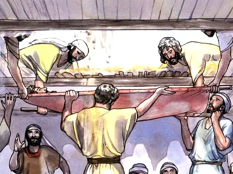

Jesus Cura o Paralítico
Referência Bíblica: Lucas 5:17-26
Você tem bons amigos? Provavelmente sim. Mas, se eles forem realmente legais contigo, te ajudarão a se aproximar de Jesus, cada vez mais. Essa história fala sobre um homem que era paralítico e tinha 4 bons amigos. Não sabemos pormenores: quais os seus nomes, suas histórias pessoais, nem como se tornaram amigos... Mas sabemos que esse grupo de amigos experimentou um grande milagre juntos. Porque creram que Jesus tem todo poder para curar e transformar as situações difíceis, viveram uma grande aventura!
Certo dia, Jesus estava ensinando e entre os ouvintes estavam uns fariseus (líderes judeus) e mestres da lei, vindos de várias regiões da Galiléia, Judéia e Jerusalém. O poder do Senhor era com Ele para curar. Nisto, chegaram uns homens carregando uma cama e nela um paralítico. Tentaram passar e colocá-lo diante de Jesus, mas havia tanta gente na casa, que nem mesmo perto da porta conseguiam chegar. Como não podiam se aproximar, por causa da multidão, subiram e fizeram um buraco no telhado, por onde desceram a cama com o doente.
Finalmente, conseguiram chegar no meio, diante de Jesus. Ao ver a fé deles, Jesus disse ao paralítico: — "Amigo, os teus pecados estão perdoados!" Mas os doutores da lei e religiosos que estavam ali, começaram a pensar consigo mesmos: "Quem é este que pensa ser igual a Deus? Só Deus é quem pode perdoar pecados." Mas Jesus, sabendo o que eles estavam pensando, disse-lhes: — Porque vocês estão pensando assim? Que será mais fácil? Dizer a este paralítico: "os teus pecados estão perdoados ou dizer-lhe: levanta-te, pega a tua cama e anda? Para que vocês saibam que eu, Filho do Homem, tenho poder na terra para perdoar pecados... Falou para o paralítico: " — sou eu que te digo, levanta-te, toma a tua maca e vai para tua casa.
Ele levantou-se e imediatamente, na frente de todos, pegou na maca em que estava deitado e foi para casa, dando glórias a Deus! Todos ficaram maravilhados e dava louvores a Deus, dizendo atemorizados: — Uau! O que vimos hoje é extraordinário!
Moral da História
Mais que a cura do nosso corpo, Jesus quer curar o nosso coração doente e manchado pelo pecado. Além disso, a cura do paralítico mostra-nos outras coisas muito importantes:
1) Jesus é Deus. Ele é poderoso para curar, perdoar pecados e nos salvar de de todo mal.
2) O maior milagre que Jesus realiza no ser humano é a cura espiritual. Ele nos dá vida eterna!
3) Jesus é o maior e melhor amigo que podemos ter na vida.
4) É bom ter amigos na fé que nos ajudem nas dificuldades e nos levem para mais perto de Jesus.
5) Devemos glorificar a Deus pelo perdão e salvação que recebemos através de Jesus.